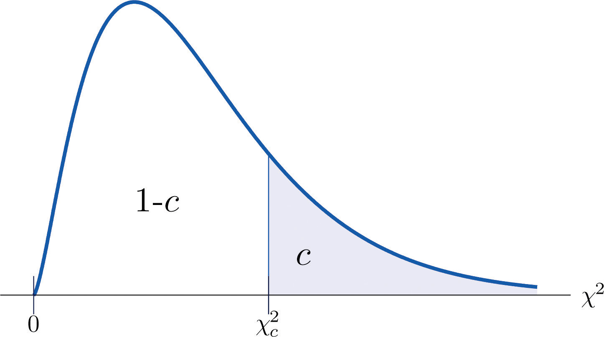
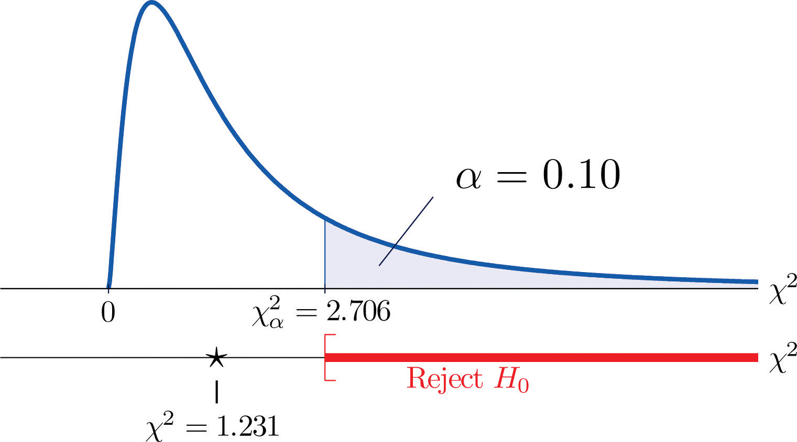
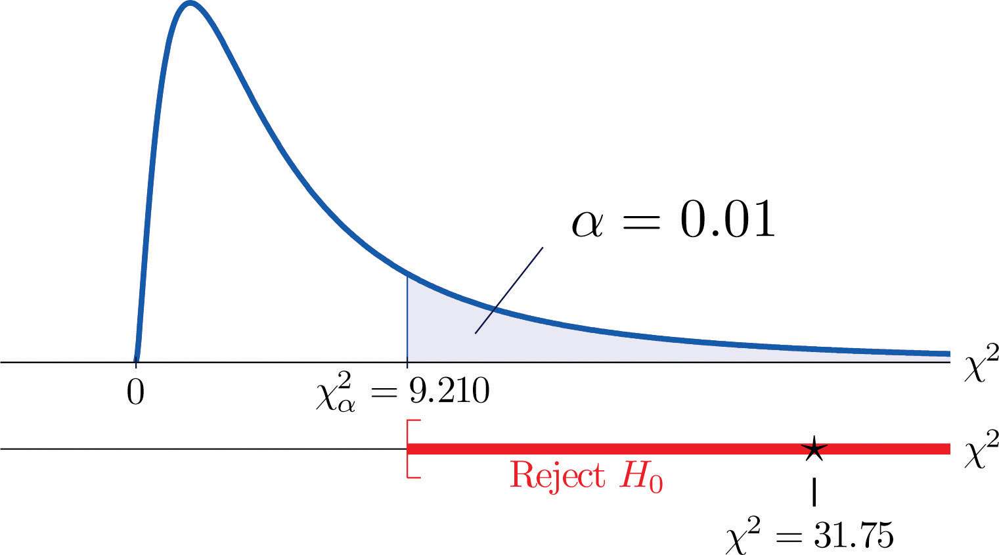

As you know, there is a whole family of t-distributions, each one specified by a parameter called the degrees of freedom, denoted Similarly, all the chi-square distributions form a family, and each of its members is also specified by a parameter , the number of degrees of freedom. Chi is a Greek letter denoted by the symbol and chi-square is often denoted by Figure 11.1 "Many " shows several chi-square distributions for different degrees of freedom. A chi-square random variableA random variable that follows a chi-square distribution. is a random variable that assumes only positive values and follows a chi-square distribution.
Figure 11.1 Many Distributions

The value of the chi-square random variable with that cuts off a right tail of area c is denoted and is called a critical value. See Figure 11.2.
Figure 11.2 Illustrated
Figure 12.4 "Critical Values of Chi-Square Distributions" gives values of for various values of c and under several chi-square distributions with various degrees of freedom.
Hypotheses tests encountered earlier in the book had to do with how the numerical values of two population parameters compared. In this subsection we will investigate hypotheses that have to do with whether or not two random variables take their values independently, or whether the value of one has a relation to the value of the other. Thus the hypotheses will be expressed in words, not mathematical symbols. We build the discussion around the following example.
There is a theory that the gender of a baby in the womb is related to the baby’s heart rate: baby girls tend to have higher heart rates. Suppose we wish to test this theory. We examine the heart rate records of 40 babies taken during their mothers’ last prenatal checkups before delivery, and to each of these 40 randomly selected records we compute the values of two random measures: 1) gender and 2) heart rate. In this context these two random measures are often called factorsA variable with several qualitative levels.. Since the burden of proof is that heart rate and gender are related, not that they are unrelated, the problem of testing the theory on baby gender and heart rate can be formulated as a test of the following hypotheses:
The factor gender has two natural categories or levels: boy and girl. We divide the second factor, heart rate, into two levels, low and high, by choosing some heart rate, say 145 beats per minute, as the cutoff between them. A heart rate below 145 beats per minute will be considered low and 145 and above considered high. The 40 records give rise to a 2 × 2 contingency table. By adjoining row totals, column totals, and a grand total we obtain the table shown as Table 11.1 "Baby Gender and Heart Rate". The four entries in boldface type are counts of observations from the sample of n = 40. There were 11 girls with low heart rate, 17 boys with low heart rate, and so on. They form the core of the expanded table.
Table 11.1 Baby Gender and Heart Rate
| Heart Rate | ||||
|---|---|---|---|---|
| Low | High | Row Total | ||
| Gender | Girl | 11 | 7 | 18 |
| Boy | 17 | 5 | 22 | |
| Column Total | 28 | 12 | Total = 40 | |
In analogy with the fact that the probability of independent events is the product of the probabilities of each event, if heart rate and gender were independent then we would expect the number in each core cell to be close to the product of the row total R and column total C of the row and column containing it, divided by the sample size n. Denoting such an expected number of observations E, these four expected values are:
We update Table 11.1 "Baby Gender and Heart Rate" by placing each expected value in its corresponding core cell, right under the observed value in the cell. This gives the updated table Table 11.2 "Updated Baby Gender and Heart Rate".
Table 11.2 Updated Baby Gender and Heart Rate
| Heart Rate | ||||
|---|---|---|---|---|
| Low | High | Row Total | ||
| Gender | Girl | R = 18 | ||
| Boy | R = 22 | |||
| Column Total | C = 28 | C = 12 | n = 40 | |
A measure of how much the data deviate from what we would expect to see if the factors really were independent is the sum of the squares of the difference of the numbers in each core cell, or, standardizing by dividing each square by the expected number in the cell, the sum We would reject the null hypothesis that the factors are independent only if this number is large, so the test is right-tailed. In this example the random variable has the chi-square distribution with one degree of freedom. If we had decided at the outset to test at the 10% level of significance, the critical value defining the rejection region would be, reading from Figure 12.4 "Critical Values of Chi-Square Distributions", , so that the rejection region would be the interval When we compute the value of the standardized test statistic we obtain
Since 1.231 < 2.706, the decision is not to reject H0. See Figure 11.3 "Baby Gender Prediction". The data do not provide sufficient evidence, at the 10% level of significance, to conclude that heart rate and gender are related.
Figure 11.3 Baby Gender Prediction
With this specific example in mind, now turn to the general situation. In the general setting of testing the independence of two factors, call them Factor 1 and Factor 2, the hypotheses to be tested are
As in the example each factor is divided into a number of categories or levels. These could arise naturally, as in the boy-girl division of gender, or somewhat arbitrarily, as in the high-low division of heart rate. Suppose Factor 1 has I levels and Factor 2 has J levels. Then the information from a random sample gives rise to a general I × J contingency table, which with row totals, column totals, and a grand total would appear as shown in Table 11.3 "General Contingency Table". Each cell may be labeled by a pair of indices stands for the observed count of observations in the cell in row i and column j, Ri for the row total and Cj for the column total. To simplify the notation we will drop the indices so Table 11.3 "General Contingency Table" becomes Table 11.4 "Simplified General Contingency Table". Nevertheless it is important to keep in mind that the Os, the Rs and the Cs, though denoted by the same symbols, are in fact different numbers.
Table 11.3 General Contingency Table
| Factor 2 Levels | |||||||
|---|---|---|---|---|---|---|---|
| 1 | j | J | Row Total | ||||
| Factor 1 Levels | 1 | O11 | R1 | ||||
| ⋮ | ⋮ | ⋮ | ⋮ | ⋮ | ⋮ | ⋮ | |
| i | Ri | ||||||
| ⋮ | ⋮ | ⋮ | ⋮ | ⋮ | ⋮ | ⋮ | |
| I | RI | ||||||
| Column Total | C1 | Cj | CJ | n | |||
Table 11.4 Simplified General Contingency Table
| Factor 2 Levels | |||||||
|---|---|---|---|---|---|---|---|
| 1 | j | J | Row Total | ||||
| Factor 1 Levels | 1 | O | O | O | R | ||
| ⋮ | ⋮ | ⋮ | ⋮ | ⋮ | ⋮ | ⋮ | |
| i | O | O | O | R | |||
| ⋮ | ⋮ | ⋮ | ⋮ | ⋮ | ⋮ | ⋮ | |
| I | O | O | O | R | |||
| Column Total | C | C | C | n | |||
As in the example, for each core cell in the table we compute what would be the expected number E of observations if the two factors were independent. E is computed for each core cell (each cell with an O in it) of Table 11.4 "Simplified General Contingency Table" by the rule applied in the example:
where R is the row total and C is the column total corresponding to the cell, and n is the sample size.
After the expected number is computed for every cell, Table 11.4 "Simplified General Contingency Table" is updated to form Table 11.5 "Updated General Contingency Table" by inserting the computed value of E into each core cell.
Table 11.5 Updated General Contingency Table
| Factor 2 Levels | |||||||
|---|---|---|---|---|---|---|---|
| 1 | j | J | Row Total | ||||
| Factor 1 Levels | 1 | R | |||||
| ⋮ | ⋮ | ⋮ | ⋮ | ⋮ | ⋮ | ⋮ | |
| i | R | ||||||
| ⋮ | ⋮ | ⋮ | ⋮ | ⋮ | ⋮ | ⋮ | |
| I | R | ||||||
| Column Total | C | C | C | n | |||
Here is the test statistic for the general hypothesis based on Table 11.5 "Updated General Contingency Table", together with the conditions that it follow a chi-square distribution.
where the sum is over all core cells of the table.
If
then approximately follows a chi-square distribution with degrees of freedom.
The same five-step procedures, either the critical value approach or the p-value approach, that were introduced in Section 8.1 "The Elements of Hypothesis Testing" and Section 8.3 "The Observed Significance of a Test" of Chapter 8 "Testing Hypotheses" are used to perform the test, which is always right-tailed.
A researcher wishes to investigate whether students’ scores on a college entrance examination (CEE) have any indicative power for future college performance as measured by GPA. In other words, he wishes to investigate whether the factors CEE and GPA are independent or not. He randomly selects n = 100 students in a college and notes each student’s score on the entrance examination and his grade point average at the end of the sophomore year. He divides entrance exam scores into two levels and grade point averages into three levels. Sorting the data according to these divisions, he forms the contingency table shown as Table 11.6 "CEE versus GPA Contingency Table", in which the row and column totals have already been computed.
Table 11.6 CEE versus GPA Contingency Table
| GPA | |||||
|---|---|---|---|---|---|
| <2.7 | 2.7 to 3.2 | >3.2 | Row Total | ||
| CEE | 35 | 12 | 5 | 52 | |
| 6 | 24 | 18 | 48 | ||
| Column Total | 41 | 36 | 23 | ||
Test, at the 1% level of significance, whether these data provide sufficient evidence to conclude that CEE scores indicate future performance levels of incoming college freshmen as measured by GPA.
Solution:
We perform the test using the critical value approach, following the usual five-step method outlined at the end of Section 8.1 "The Elements of Hypothesis Testing" in Chapter 8 "Testing Hypotheses".
Step 1. The hypotheses are
Step 3. To compute the value of the test statistic we must first computed the expected number for each of the six core cells (the ones whose entries are boldface):
Table 11.6 "CEE versus GPA Contingency Table" is updated to Table 11.7 "Updated CEE versus GPA Contingency Table".
Table 11.7 Updated CEE versus GPA Contingency Table
| GPA | |||||
|---|---|---|---|---|---|
| <2.7 | 2.7 to 3.2 | >3.2 | Row Total | ||
| CEE | R = 52 | ||||
| R = 48 | |||||
| Column Total | C = 41 | C = 36 | C = 23 | n = 100 | |
The test statistic is
Step 4. Since the CEE factor has two levels and the GPA factor has three, I = 2 and J = 3. Thus the test statistic follows the chi-square distribution with degrees of freedom.
Since the test is right-tailed, the critical value is Reading from Figure 12.4 "Critical Values of Chi-Square Distributions", , so the rejection region is
Figure 11.4 Note 11.9 "Example 1"
Find for each of the following number of degrees of freedom.
Find for each of the following number of degrees of freedom.
Find for each of the following number of degrees of freedom.
Find for each of the following number of degrees of freedom.
For and , find
For and , find
A data sample is sorted into a 2 × 2 contingency table based on two factors, each of which has two levels.
| Factor 1 | ||||
|---|---|---|---|---|
| Level 1 | Level 2 | Row Total | ||
| Factor 2 | Level 1 | R | ||
| Level 2 | R | |||
| Column Total | C | C | n | |
A data sample is sorted into a 3 × 2 contingency table based on two factors, one of which has three levels and the other of which has two levels.
| Factor 1 | ||||
|---|---|---|---|---|
| Level 1 | Level 2 | Row Total | ||
| Factor 2 | Level 1 | R | ||
| Level 2 | R | |||
| Level 3 | R | |||
| Column Total | C | C | n | |
A child psychologist believes that children perform better on tests when they are given perceived freedom of choice. To test this belief, the psychologist carried out an experiment in which 200 third graders were randomly assigned to two groups, A and B. Each child was given the same simple logic test. However in group B, each child was given the freedom to choose a text booklet from many with various drawings on the covers. The performance of each child was rated as Very Good, Good, and Fair. The results are summarized in the table provided. Test, at the 5% level of significance, whether there is sufficient evidence in the data to support the psychologist’s belief.
| Group | |||
|---|---|---|---|
| A | B | ||
| Performance | Very Good | 32 | 29 |
| Good | 55 | 61 | |
| Fair | 10 | 13 | |
In regard to wine tasting competitions, many experts claim that the first glass of wine served sets a reference taste and that a different reference wine may alter the relative ranking of the other wines in competition. To test this claim, three wines, A, B and C, were served at a wine tasting event. Each person was served a single glass of each wine, but in different orders for different guests. At the close, each person was asked to name the best of the three. One hundred seventy-two people were at the event and their top picks are given in the table provided. Test, at the 1% level of significance, whether there is sufficient evidence in the data to support the claim that wine experts’ preference is dependent on the first served wine.
| Top Pick | ||||
|---|---|---|---|---|
| A | B | C | ||
| First Glass | A | 12 | 31 | 27 |
| B | 15 | 40 | 21 | |
| C | 10 | 9 | 7 | |
Is being left-handed hereditary? To answer this question, 250 adults are randomly selected and their handedness and their parents’ handedness are noted. The results are summarized in the table provided. Test, at the 1% level of significance, whether there is sufficient evidence in the data to conclude that there is a hereditary element in handedness.
| Number of Parents Left-Handed | ||||
|---|---|---|---|---|
| 0 | 1 | 2 | ||
| Handedness | Left | 8 | 10 | 12 |
| Right | 178 | 21 | 21 | |
Some geneticists claim that the genes that determine left-handedness also govern development of the language centers of the brain. If this claim is true, then it would be reasonable to expect that left-handed people tend to have stronger language abilities. A study designed to text this claim randomly selected 807 students who took the Graduate Record Examination (GRE). Their scores on the language portion of the examination were classified into three categories: low, average, and high, and their handedness was also noted. The results are given in the table provided. Test, at the 5% level of significance, whether there is sufficient evidence in the data to conclude that left-handed people tend to have stronger language abilities.
| GRE English Scores | ||||
|---|---|---|---|---|
| Low | Average | High | ||
| Handedness | Left | 18 | 40 | 22 |
| Right | 201 | 360 | 166 | |
It is generally believed that children brought up in stable families tend to do well in school. To verify such a belief, a social scientist examined 290 randomly selected students’ records in a public high school and noted each student’s family structure and academic status four years after entering high school. The data were then sorted into a 2 × 3 contingency table with two factors. Factor 1 has two levels: graduated and did not graduate. Factor 2 has three levels: no parent, one parent, and two parents. The results are given in the table provided. Test, at the 1% level of significance, whether there is sufficient evidence in the data to conclude that family structure matters in school performance of the students.
| Academic Status | |||
|---|---|---|---|
| Graduated | Did Not Graduate | ||
| Family | No parent | 18 | 31 |
| One parent | 101 | 44 | |
| Two parents | 70 | 26 | |
A large middle school administrator wishes to use celebrity influence to encourage students to make healthier choices in the school cafeteria. The cafeteria is situated at the center of an open space. Everyday at lunch time students get their lunch and a drink in three separate lines leading to three separate serving stations. As an experiment, the school administrator displayed a poster of a popular teen pop star drinking milk at each of the three areas where drinks are provided, except the milk in the poster is different at each location: one shows white milk, one shows strawberry-flavored pink milk, and one shows chocolate milk. After the first day of the experiment the administrator noted the students’ milk choices separately for the three lines. The data are given in the table provided. Test, at the 1% level of significance, whether there is sufficient evidence in the data to conclude that the posters had some impact on the students’ drink choices.
| Student Choice | |||
|---|---|---|---|
| Regular | Strawberry | Chocolate | |
| Poster Choice | |||
| Regular | 38 | 28 | 40 |
| Strawberry | 18 | 51 | 24 |
| Chocolate | 32 | 32 | 53 |
Large Data Set 8 records the result of a survey of 300 randomly selected adults who go to movie theaters regularly. For each person the gender and preferred type of movie were recorded. Test, at the 5% level of significance, whether there is sufficient evidence in the data to conclude that the factors “gender” and “preferred type of movie” are dependent.
http://www.gone.2012books.lardbucket.org/sites/all/files/data8.xls
, , do not reject H0
, , reject H0
, , reject H0
Rejection Region: Decision: Reject H0 of independence.